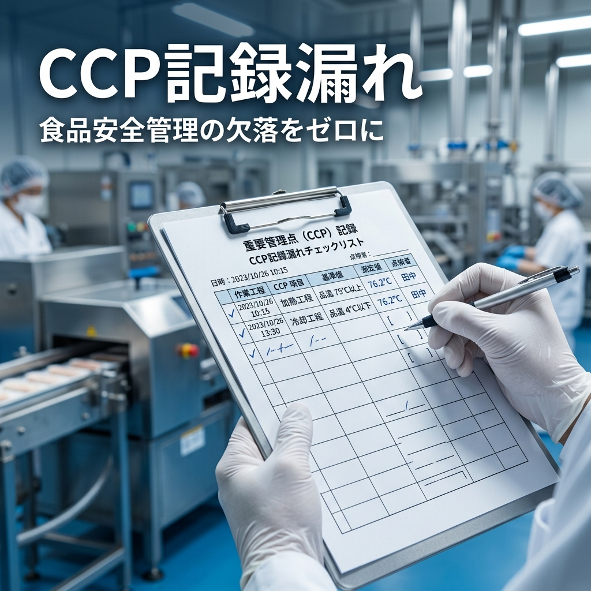

たった1箇所の記録の空白が、数千万円の製品回収（リコール）と、長年築き上げた取引先からの信頼を瞬時に奪い去る。
現場の作業者は、その「空白の恐ろしさ」を本当に理解しているでしょうか？
こんにちは。食品安全パートナーズです。
現役のJFS-B監査員として、年間数十に及ぶ食品工場の現場を見てきました。その中で、最も頻繁に遭遇し、かつ最も「危険な兆候」を示すのが【CCP（重要管理点）の記録漏れ】です。
現場で記録漏れを指摘した際、「あ、忙しくてつい書き忘れました。次から気をつけます」という言葉で終わらせていませんか？
もしあなたの日々の現場確認や日報確認で、この対応を許容しているとしたら、それは「時限爆弾」のスイッチを入れたまま放置しているのと同じです。
私たちプロの監査員は、単に「空欄があること」を粗探しして不適合にしたいわけではありません。限られた審査時間（約1〜2時間）の中で、その「空欄」が単なるヒューマンエラーなのか、それとも工場全体の食品安全システムが崩壊しているサインなのかを見極めているのです。
ある中堅食品メーカーでは、監査で発覚した「たった1日のCCP記録の空白」が原因で、そのロットの安全性が証明できず出荷停止となり、数日間のライン停止と数百万円の損害が発生した事例もあります。
では、プロの監査員は記録漏れを発見したとき、どのように深掘りをしていくのでしょうか？
今回は、JFS-B監査員の目線から「CCP記録漏れがあった場合の具体的なヒアリング手法」を公開します。
記録漏れなどの不具合を発見した際、現場確認や日報確認において、以下の流れで事象を論理的に追っていくことが重要です。
まずは「いつ、どの製品で、どのCCPの記録が漏れているのか」を正確に把握します。事実関係が曖昧なままでは、推測の域を出ず次のステップに進めません。
「誰が」その記録を漏らしたのかを確認します。特定のAさんだけが頻繁に漏らしているのか、それともBさんやCさんも漏らしているのか。これによって、個人の資質の問題か、現場の仕組み（忙しすぎる、記録用紙の配置が悪い等）の問題かが明確に分かれます。
該当作業者が「正しい記録のつけ方」や「なぜCCPが重要なのか」について、いつ、誰から教育を受けたのか、その教育記録（証拠）を確認します。
「ちゃんと教えました」という口頭の主張は通用しません。「〇月〇日に教育を実施した」という記録があれば納得する材料となります。客観的事実だけを探ります。
多くの場合、日々の現場確認や日報確認は、上記の「③教育記録の確認」で満足し、「再教育を実施した」として是正完了にしてしまいます。
しかし、そこから先の深掘りこそが重要です。
「なぜ、教育したはずなのに記録漏れが起きたのか？」
ここから先の【④〜⑥のステップ】にこそ、本番の監査で重大な不適合になるかどうかの決定的な分かれ道があります。監査員は、限られた時間の中で「要求事項に合致しているか」を論理的に判断する証拠を探しています。
教育記録が存在したとしても、その「教え方」は本当に適切だったでしょうか？
・文字ばかりのマニュアルをただ読ませただけではないか？
・現場で実際にやって見せ（OJT）、本人が正しく記録できるか理解度を確認したか？知識だけはあっても実作業が伴わない「ペーパードライバー」状態になっていないか？
・外国人労働者に対して、言語の壁を越えた教育（写真や動画の活用など）がなされていたか？
教育方法が現場の実態に合わず形骸化していれば、記録漏れは「起こるべくして起きた」システムエラーとみなされます。
もし④で「教育方法そのものに問題がある」と判明した場合、事態はさらに深刻になります。
なぜなら、その不適切な教育方法はCCPだけでなく、アレルゲン管理や洗浄殺菌など、他の高リスク工程の教育にも適用されている可能性が高いからです。
年間教育計画を確認し、「この教育体制で、工場全体の食品安全は本当に担保できているのか？」という根本的なシステム評価へと切り替えます。たった1つの記録漏れが、工場全体の教育システムの不適合へと繋がります。
最後に、同じ工程を担当する他の作業者の記録も確認します。もし他の作業者も記録を漏らしている、あるいは「まとめて後から書いている」ような改ざんの疑いがある場合、それは個人のミスではなく「組織的な問題」として認識されます。
コンプライアンスに問題がある組織として認識され、食品防御にも懸念が出てきます。JFS-Bの要求事項にはありませんが、食品偽装にも関連してくる話です。法令順守にも懸念が出てくる可能性があります。
ここまで厳しい深掘りをお伝えしてきましたが、誤解しないでいただきたいことがあります。
私たち監査員は、決して「不適合（バツ）」をつけるために工場を回っているわけではありません。逆に、限られた時間の中で「不適合にならないための証拠（マルをつけるための理由）」を必死に探しているのです。
「今回は偶発的なミスであり、教育システム自体は正常に機能している」「是正処置が適切に取られ、再発防止の仕組みが構築されている」
こうした要求事項に合致する証拠を論理的に集め、誰が見ても納得する審査報告書を作成する。これが監査員の仕事です。
「外部から与えられたマニュアル」をただこなすだけでは、現場は動かず、記録漏れはなくなりません。現場の作業者自身が「なぜこの記録が必要なのか」を理解し、自ら運用ルールを改善していく仕組みを作ることこそが、最強の食品安全対策です。
「記録漏れがありました」→「次から気をつけます」のループから抜け出せない工場は、必ずいつか重大な事故を起こします。問題の根源を特定できなければ、リスクを放置し続けることになるからです。
食品安全パートナーズでは、現役JFS-B監査員の視点から、その場しのぎではない「自走できる真の食品安全システム」の構築をサポートするための実践的なツールを提供しています。
「記録漏れをなくしたい」「現場の教育を効率化したい」「自社のシステムをセルフチェックしたい」という方は、ぜひ以下のアプリや書籍をご活用ください。
ほんの小さなほころびを早期に発見し、自分たちの手で改善する仕組みを作ることこそが、数千万円の損失を防ぐ唯一の手段です。